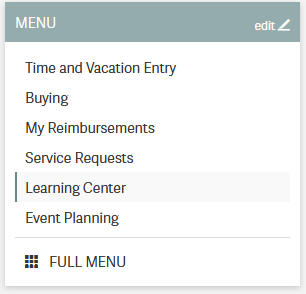
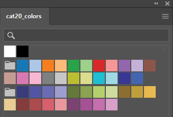
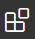

Day 0: Software and training setup¶
Our lab uses a lot of different software and various webservices. Before beginning IAP, you should install at least everything required on the list here, as well as completing all of the required EHS trainings.
EHS setup and trainings¶
Adding yourself to the lab’s training group will register you with the EHS system and add all necessary trainings to your profile.
Go to https://atlas.mit.edu and go to the learning center, through the tab on the left:
In the upper right, select “My profile”, then “Update PI/activities”
Add Kate E. Galloway as your PI.
Select the following training types. If you are an undergrad, do not select the BL2+ training group.
After submitting, you will see many required trainings. Some have a required ‘classroom’ component, such as the Lab Specific Chemical Hygiene training, which will be completed with an in-lab walkaround.
Note
One of the components of the bloodborne pathogen training is the opportunity to be vaccinated for Hepatitis B or to have an antibody titer test for free.
Most of us were vaccinated for HepB as children, but that vaccine was only ~90% effective, so you may want to get the free antibody titer test. You can get a free booster or get doses of a new, more modern HepB vaccine if you no longer have HepB antibodies.
If you are going to be helping with mouse work, still under the ‘My Profile’ tab, you should click Join Another Group under training groups and add the 68N: Mouse training group.
Software and webservices¶
Core webservices¶
Create a Quartzy account. Using your MIT email is recommended.
Create a Github account. You can use either a personal or MIT email.
Activate your student benefits by going to https://education.github.com/discount_requests/student_application. You will be asked to connect your MIT email and send in a picture of your student ID. (Because MIT does not remove emails for alums, they need to confirm active student status.)
Create a Zotero account. Using a personal email is recommended for permanence reasons.
Create an ORCID. Adding all of your active emails is recommended.
After creating these accounts, message your Kerberos ID, your Github username, your Zotero username,
and the email you used to create your Quartzy account to the #iap slack channel. We’ll get you added to
all of the above. You will have to:
Accept the Github invitation to the gallowaylabmit organization.
Accept the Zotero invitation to the
gallowaylabgroup, checking that it appears in your group list.
Experimental software¶
SnapGene: We use SnapGene for our cloning analysis. Download it through IST here, if asked for a registration code, get it here (certificates required for both links).
FlowJo: When initially analyzing flow cytometery data, you can install a FlowJo demo from
instruments\software. The demo is limited time, so don’t install it until you have data to analyze!FIJI: For simple image analysis, Fiji (ImageJ) gives a nice GUI interface. Download it from https://fiji.sc
CellProfiler: CellProfiler is an excellent tool for doing image cytometry (analyzing cell-by-cell in image data). In contrast to the GUI-only tools built into the Keyence software, CellProfiler enables repeatable, pipelinable analyses. Download it from https://cellprofiler.org/
Other¶
Zotero: Zotero is an excellent free, open-source citation manager. After downloading Zotero from https://www.zotero.org/, it should prompt you to install the Zotero Connector, a browser plugin that lets you download paper citations with one-click. If not, download the connector here. We also have a shared Zotero group, to accumulate citations when writing manuscripts.
Several helpful plugins can be downloaded; the recommended ones are:
Recommended Zotero plugins¶ Addon name
Description
Enables useful file operations, such as extracting annotations from a marked-up PDF, transferring new papers to a tablet for annotation, and auto-file renaming.
Enables helpful tagging operations, such as the ability to copy/paste tags or easily add paper relationships.
If you plan to use LaTeX, install this plugin before exporting to BibTeX. This addon makes nice-looking, stable citation keys that do not change on export.
Downloading Zotero plugins through Firefox
Since Zotero is built on modified Firefox, Zotero plugins appear similar to Firefox plugins. If downloading these plugins through Firefox, you will need to explicitly right click->download target; left-clicking on download links will attempt to install the Zotero plugin as a Firefox plugin, which will fail.
Creative Cloud: MIT recently opened Adobe’s Creative Cloud to all students. After installing the Creative Cloud application, login with your MIT credentials, after selecting “Work/School account”. You may have to wait 24 hours for activation after your first login. You should install Acrobat (for viewing PDFs) and Illustrator (for drawing vector art).
Inkscape: (Optional) Inkscape is a free and open-source vector drawing program that can be downloaded here. Inkscape and Illustrator have many similar, but not completely overlapping features. If you have not learned to use either, pick one to start with to learn first (likely Illustrator), However, it’s likely eventually worth learning both if you don’t want to eventually pay for Creative Cloud. Inkscape’s (Cairo) PDF import also tends to be superior, if trying to import vector images from paper PDFs.
Color palletes: Having nice color-blind friendly, distinct colors to start drawings from is helpful. If making cartoon/stylized figures, the colors in-pallette might be enough! If not, the pallette can provide a good starting place.
You can download pre-created pallettes for both Illustrator and Inkscape for the well-known Category20/20b color set, which is color-blind friendly (and becoming the default in more and more software packages):
To use these pallette files, see the Illustrator documentation or the Inkscape documentation.
Coding and collaboration¶
Slack is how we communicate! After downloading it, sign into https://gallowaylab.slack.com. In addition to the default channels, you may want to join
#sequencingto get your sequencing orders delivered right to you via Slack and join#memesfor obvious reasons.Git: For any code/code-like thing (LaTeX, other plain-text files) you write, Git is the standard way to share and collaborate with others in addition to tracking your entire version history.
You must install the base command-line tools from here, make sure that you select your operating system and not the “Download source code” button!
Tip
When installing Git, you may want to change Git’s default editor to something other than Vim, such as VS Code.
When asked about adjusting the PATH environment, choose the Git from the command line and also from 3rd-party software option; this makes sure all the other software also has Git access. All other defaults are fine, but can be changed if you want.
After installation, you should set your global identity on that computer (e.g. what name/email gets stored alongside the work you do).
Open a terminal (Terminal on MacOS, Powershell on Windows) and type the following lines (without the beginning
$, which identifies here that we are typing this into a terminal), substituting your name and email (giving an email you associated with your Github account).$ git config --global user.name "Full Name" $ git config --global user.email email_address@example.com
Github Desktop: This program is a good basic GUI Git tool, in case the command line interface/built in editor interfaces aren’t for you. Download it here.
Python: Python is an excellent “Jack of all trades” language; we use it extensively. If you are on MacOS, you may have Python3 pre-installed; you can check by typing
python3at a terminal. If you do not have Python preinstalled, you should download it from here. Click the latest version download from the top, then scroll down and select the 64-bit installer for your OS.When installing, select Add Python to PATH; this ensures that when you type
pythonat a terminal, you get this version you just installed. Other software can also access this “default” installation.On snakes and Anaconda
If you have Anaconda installed and don’t have an explicit reason to need it (e.g. conda-only packages), it is recommended to uninstall Anaconda and install Python directly this way.
With modern Python, the benefits that Anaconda initially brought to the field (virtual environments and pre-compiled packages) are now integrated into the normal Python ecosystem, making Anaconda unnecessary. We also don’t want multiple Python versions competing.
After installing, to make sure it worked, open a new terminal and type the following, checking that the output looks similar to the following.
$ python Python 3.9.1 (tags/v3.9.1) [MSC v.1916 64 bit (AMD64)] on win32 Type "help", "copyright", "credits" or "license" for more information.
Exit the Python prompt by typing
exit()After exiting Python, you can install the normal “semi-base” packages needed for most data analysis:
$ pip install numpy scipy pandas matplotlib jupyter jupyterlabR: Many bioinformatic tools are written in R, so we also use R. From here, download the main package (MacOS) or both the
baseentry and theRtoolsentry (Windows).VSCode: (Optional) Having a good plain-text editor (e.g., not Word) is important for coding, and is ultimately up to personal taste. If you have your own favorite, feel free to not install VS Code. If you are used to language-specific IDE’s like MATLAB, IDLE, or RStudio, VS Code allows you to do editing, debugging, previewing, source control, etc in a mostly language-agnostic manner; once you customize it to how you want, you can use it for all of your coding.
The recommended editor is VS Code, downloadable here.
After installing, you should click the extensions button:
and search and install the following extensions (type in the name, click the install button).
Recommended VS Code extensions¶ Addon name
Image
Description
Python
Enables Python debugging, running, and IntelliSense (in-line help while typing).
Pylance
Faster ‘language server’ for Python, which means the IntelliSense is faster and more accurate.
R
Base language support for R.
R LSP Client
The VS Code side of the R language server. Before installing this, run
install.packages("languageserver")inside an R prompt.reStructuredText
Enables reStructuredText support, the language used to write this documentation, among others.
Jupyter
Inline Jupyter notebook support. No more need to launch Jupyter in a web browser, just do it inside VS Code!
Code Spell Checker
Inline spell checker that is intelligent enough to not flag specific language-specific words, but still can spell check comments and variable names.
RStudio: (Optional) If you don’t feel like using VS Code for your R work, the excellent, well-polished standard IDE is RStudio Desktop, downloadable here.
{kind=link}
{kind=link}
{kind=link}
{kind=link}
{kind=link}
{kind=link}
{kind=link}